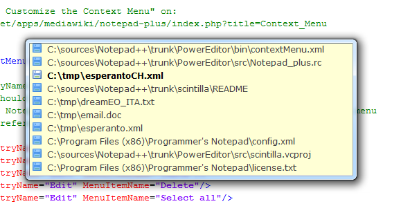

Le Commutateur de documents
Le commutateur de documents est une petite liste de fichiers affichée si
dessous (pour l'activer, voir Préférences )
pour pouvoir organiser les documents, vous permettant de sélectionner un document
ouvert pour en faire le document maître. La liste restera visible jusqu'à ce que
vous relâchez la touche de modification qui a affiché la liste (touche Ctrl
si vous utilisez la touche TAB ou sur le bouton droit de la souris si vous utilisez la molette de défilement) ou l'un des documents a été sélectionné en cliquant dessus avec la bouton gauche de la souris. Le document
mis en évidence sera alors activé.

Notez bien que si vous affectez autre chose que (Ctrl-)Maj-TAB pour passer des documents,
le sélecteur de document ne fonctionnera pas correctement lors de la commutation à l'aide du clavier. Dans ce cas, utiliser la
souris ou désactiver l'option (depuis v5.4.3).
Il y a un autre outil pour vous aider à naviguer parmi les fichiers ouverts: le Changeur de Fichiers Vertical. Il s'agit d'une
fenêtre ancrable où s'affichent les noms des onglets des deux vues; vue principale d'abord.
Son affichage et commandé par
Show dans l'encadré Paramétrages -> Préférences -> Général -> Document Switcher .
 . Vous pouvez y trier les noms d'onglet, mais cela va mélanger les noms des deux vues.
L'ordre par défaut reviendra au redémarrage de Notepad++, à savoir: vue principale en haut, vue secondaire en bas, et ordre des onglets de
gauche à droite dans chaque vue.
. Vous pouvez y trier les noms d'onglet, mais cela va mélanger les noms des deux vues.
L'ordre par défaut reviendra au redémarrage de Notepad++, à savoir: vue principale en haut, vue secondaire en bas, et ordre des onglets de
gauche à droite dans chaque vue.
Pour atteindre rapidement le n-ième document de la bare d'onglets,
avec n entre 1 et 9,
il suffit d'utiliser Ctrl-PavéNumériquen
On peut masquer la colonne des extensions en cochant Masquer la colonne des extensions dans Préférences → Général